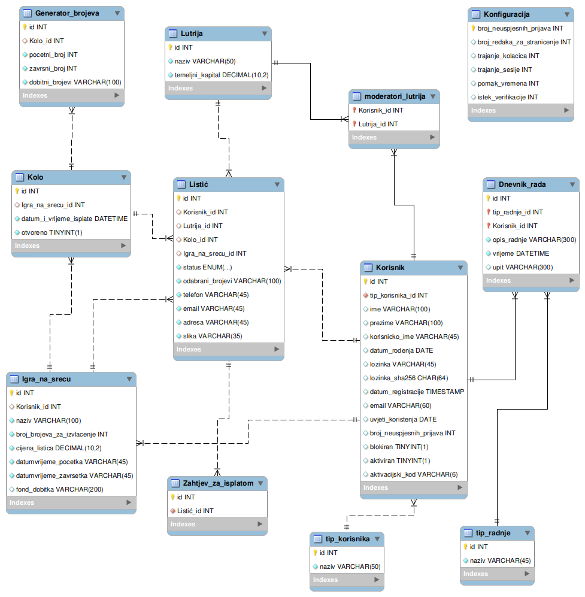
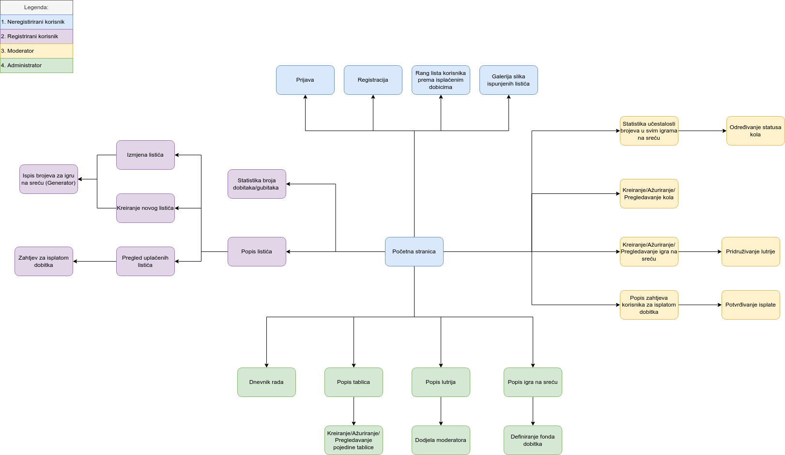

Opis projektnog zadatka
U sklopu kolegija Web dizajna i programiranja bilo je potrebno izraditi web stranicu. Tema moje grupe je "Igra na sreću".
Cilj ovog projekta je kreiranje, upravljanje i isplata dobitaka igara na sreću. Postoje 4 vrste uloga, a to su: neregistrirani korisnik,
registrirani korisnik, moderator i administrator. Svaka uloga obilježava različite funkcionalnosti. Korisnici imaju opciju prijave i odjave
s web stranice. Administratori imaju najveće ovlasti te oni kreiraju lutrije i dodjeljuju im moderatora. Također, kreiraju igre na sreću.
Moderatori pridružuju igre na sreću za lutrije u kojima je dodijeljen te kreira kola. Registrirani korisnici uz pomoć generatora slučajnih
brojeva mogu ispisati brojeve za igru na sreću. Neregistrirani korisnici imaju najmanje ovlasti te oni mogu vidjeti rang listu korisnika
prema isplaćenim dobicima i galeriju slika ispunjenih listića.
Opis projektnog rješenja
Na početnoj stranici korisnik se ima pravo prijaviti te ovisno o svojoj ulogi ima opcije kojima može pristupiti. Korisnik kada se ne prijavi
smatra se kao neregistrirani korisnik te ima dvije opcije: pregleda rang liste isplaćenih dobitaka u nekom vremenskom razdoblju i pregled galerija
slika ispunjenih listića uz mogućnost sortiranja po kolu ili ukupnom fondu uplaćenih listića te filtriranja po lutriji. Ukoliko je prijavljen registrirani
korisnik, tada on može odigrati igru na sreću, tj. generirat će sebi slučajne brojeve za tu igru. Moderatori kreiraju/pregledavaju/ažuriraju igre na sreću
za lutrije kojima je dodijeljen. Isto tako, kreira/pregledava/ažurira kola za određenu igru na sreću. Administrator ima najveće ovlasti te ima funkcionalnosti
prethodno opisanih uloga uz dodatak kreiranja/pregledavanja/ažuriranja lutrija te kreiranja/pregledavanja/ažuriranja igri na sreću.
ERA model

Navigacijski dijagram

Popis i opis skripata, mapa mjesta
- mapa css - sadrži skriptu ppoldruga.css koja služi za oblikovanje web stranice
- mapa javascirpt - sadrži skriptu ppoldruga.js i ppoldruga_jquery.js koja služi za validaciju na strani klijenta i slanje ajax zahtjeva
- mapa izvorne_datoteke - sadržava .sql, i .mwb datoteke
- mapa json - sadrži skriptu provjera_kor_ime.php koja provjerava korisničko ime u bazi putem ajaxa
- mapa klase - sadrži skripte klasa, baza.class.php - spajanje na bazu, dnevnik.class.php - upravljanje s dnevnikom, sesija.class.php - kreiranje sesije
- mapa materijali - sadrži fotografije (.png i .jpg datoteke)
- mapa obrasci - sadrži stranice: aktivacija.php - aktivacija korisničkog računa, prijava.php - stranica prijave, registracija.php - stranica registracije
- mapa privatno - sadrži .htaccess, .htpasswd i korisnici.php skripte koje služe za prikaz svih korisnika uz prethodnu prijavu pomoću korisničkog imena i lozinke
- blokiranje_odblokiranje.php - stranica blokiranja i odblokiranja korisnika
- dnevnik.php - stranica pregleda dnevnika
- funkcije.php - sadrži funkcije generiranja lozinke i generiranja aktivacijskog koda
- galerija_slika.php - stranica galerije slika ispunjenih listića
- generator_reg.php - stranica na kojoj korisnik može generirati nasumične brojeve
- igre.php - stranica koja služi za upravljanje igrama na sreću (administrator)
- igre_moderator.php - stranica koja služi za upravljanje igrama na sreću (moderator)
- index.php - početna stranica
- isplata_dobitka.php - stranica na kojoj moderator potvrđuje zahtjeve korisnika za isplatu dobitka
- kolo.php - stranica za upravljanje kolima
- konfiguracija_sustava.php - stranica gdje administrator može konfigurirati sustav
- listici.php - stranica gdje registrirani korisnik vidi svoje uplaćene listiće grupirane
- lutrije.php - stranica za upravljanje lutrijama (administrator)
- meni.php - skripta koja se uključuje u ostale stranice (izbornik)
- rang_lista - stranica rang liste isplaćenih dobitaka
- zaglavlje.php - skripta koja se uključuje u ostale stranice (sadrži uključivanje klasa baze, dnevnika i sesije)
Popis i opis korištenih tehnologija i alata
- Javascript - validacija na strani klijenta
- JQuery - provjera putem ajaxa
- PHP - rad s bazom, provjera zahtjeva POST i GET metodama
- Filezilla - alat za prijenos datoteka na server
- phpMyAdmin - unos podataka u tablice baze podataka i izrada potrebnih upita
- MySQL Workbench - alat u kojem je izrađena baza podataka (ERA model)
- Netbeans IDE - alat u kojem je napravljen projekt
- Terminal - web server pomoću kojeg je testirano programsko rješnje
Popis i opis vanjskih biblioteka
- Google reCAPTCHA - zaštita od automata